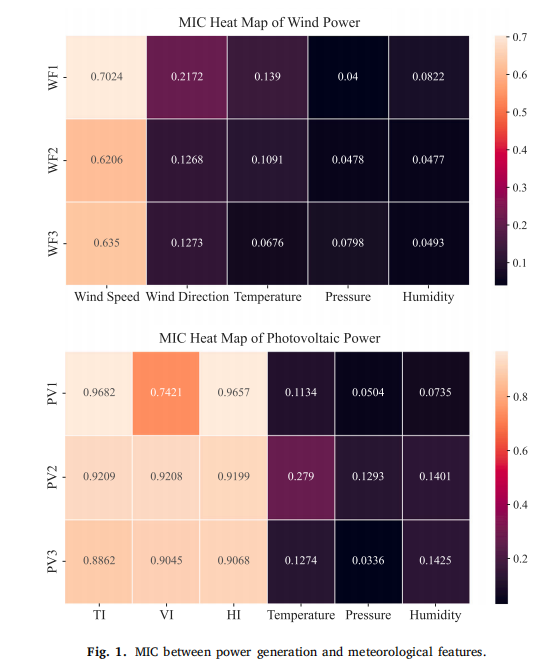

TPA-LSTM是一种结合了Transformer注意力机制和LSTM长短期记忆网络的技术，用于处理序列数据。该模型在保持LSTM原有优势的基础上，引入了Transformer的自注意力机制，能够更好地捕捉序列中的长距离依赖关系。
技术分享
TPA-LSTM
📝 摘要
📖 正文
一、xxx
xxx

二、xxx
xxx
以下是使用 PyTorch 构建简单神经网络的代码示例：
import torch
import torch.nn as nn
import torch.optim as optim
# 定义神经网络模型
class SimpleNN(nn.Module):
def __init__(self):
super(SimpleNN, self).__init__()
self.fc1 = nn.Linear(784, 512)
self.fc2 = nn.Linear(512, 256)
self.fc3 = nn.Linear(256, 10)
self.relu = nn.ReLU()
def forward(self, x):
x = self.relu(self.fc1(x))
x = self.relu(self.fc2(x))
x = self.fc3(x)
return x
# 初始化模型
model = SimpleNN()
criterion = nn.CrossEntropyLoss()
optimizer = optim.Adam(model.parameters(), lr=0.001)
三、xxx
xxx
四、实践建议
xxx
1. xxx：xxx
2. xxx：xxx
3. xxx：xxx
4. xxx：xxx
五、总结
xxx